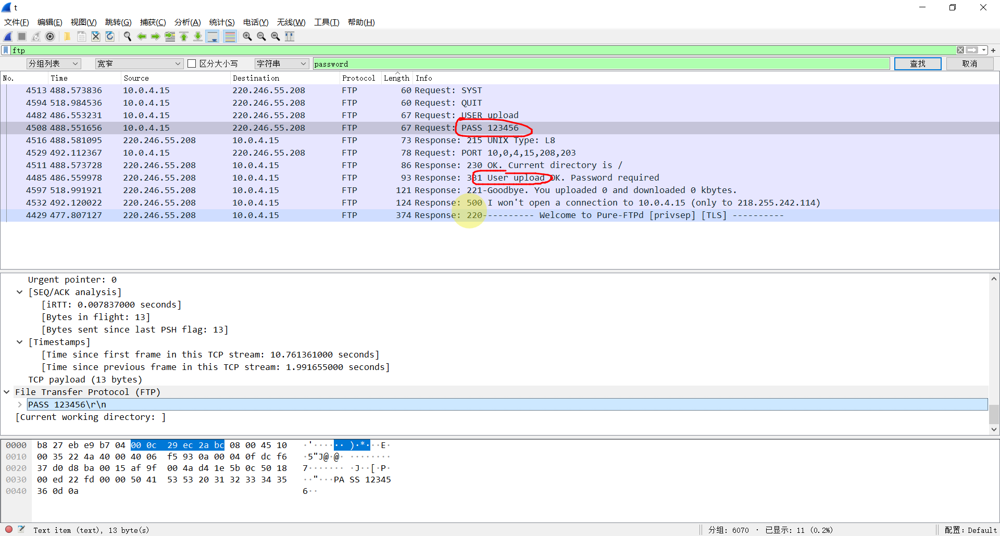

aaaaa
ps：Raid重组技术其实还是比较简单的，并不涉及底层分析，相反更多的更依赖工具和基础操作 （关键是复杂了咱也不会>…<）
RAID定义：
RAID （Redundant Array of Independent Disks）即独立磁盘冗余阵列，通常简称为磁盘阵列
RAID优点
更大的存储空间；更快的传输速度；更高的数据安全性
RAID术语
物理盘：物理盘是指创建RAID所用的每块独立的物理硬盘
逻辑盘：多块物理盘组成RAID之后，多块物理盘就组成的新的硬盘
热备盘：热备盘是指RAID中空闲、加电并待机的硬盘
盘序：多块物理盘在创建RAID时，这些物理盘安排在RAID组中的先后顺序
条带大小：在RAID中每块物理盘被分割为一个一个的大小相等单元被称为RAID的条带，是RAID处理数据的基本单元
RAID1、4、5、10、01等等
重点了解一下RAID5
常规左同步、左异步，常规右同步、右异步
RAID阵列卡设置名词解释
Disk Group:磁盘组，这里相当于是阵列，例如配置了一个Raid1,就是一个磁盘组。
VD（virtual Disk）:虚拟磁盘，虚拟磁盘可以不使用阵列的全部容量，也就是说一个可以分为多个VD。
PD（physical disk）:故名思义，主是物理硬盘。
HS（Hot Spare）:热备盘
其实主要用到的工具就是取证大师、R-studio、FTK、还有VMware
主要面临的阻碍就是磁盘阵列，我们可以通过取证大师或者R-studio给识别出来，但是有的时候并不如意，很有可能会解析半天或者识别不出来，下面推荐几种方法：
取证大师解析逻辑卷+破解阵列
FTK挂载+取证大师快速检测识别
FTK挂载+VMware虚拟机读取+虚拟机绕过登陆密码
[单选题] 第D部份 (第 55 至 84 题) : 根据镜像文件，其文件名为 “RongkeDatabaseD1.E01”, “RongekeDatabaseD2.E01”, “RongekeDatabaseD3.E01” 的内容，回答关于荣科数码(RKD)的数据库服务器的问题。 注意: 该系统时区未被正确设定，记录文件(log)内的时间较实际时间快16小时，且没有连结互联网。
55.荣科数码(RKD)的数据库服务器有多少个磁盘冗余数组(RAID)的虚拟块设备Multiple Devices(md)? (1分)
A. 0
B. 1
C. 2
D. 3
E. 4
标记本题
D
三个送分的
[单选题] 56.该数据库服务器设有多少个卷组（VG）、逻辑卷（LV）？ (1分)
A. 一个卷组、两个逻辑卷
B. 两个卷组、两个逻辑卷
C. 两个卷组、三个逻辑卷
D. 三个卷组、三个逻辑卷
E. 三个卷组、四个逻辑卷
标记本题
这道题尝试用取证大师直接分析磁盘阵列分析不出来
FTK挂载+VMware虚拟机读取+虚拟机绕过登陆密码
然后root登录后，执行命令
vgdisplay |more 分页显示卷组
lvdisplay |more 分页显示逻辑卷
选C
[单选题] 57.该数据库内，挂载”/home”分割所在的卷组（VG）的UUID为？ (1分)
A. YaPmrx-aWuN-jB9F-bK6V-5mrf-qDD1-RKttcS
B. zd02XF-jjsB-Nelp-RhA3-Xesv-PbXZ-FbVYsv
C. 6tPmv1-CHhY-3Th3-d1ZO-NkCE-JH3k-zp4dtA
D. CHFrqt-VMqH-eTcq-6khn-k8MC-UO4i-zZwuWN
E. MOHN39-Ly2p-5km1-d2mi-3SeN-fTVu-y0PF58
标记本题
D
在逻辑卷Vg2中发现/home
那么题目问的是卷组，就去找Vg2的卷组
也可以查看取证大师，这里直接用挂载的磁盘

[单选题] 58.该数据库内，”/boot”所在的虚拟块设备(Multiple Devices)总阵列大小(ARRAY SIZE)？ (1分)
A. 3900416 (3.72 GiB 3.99 GB)
B. 6831104 (6.51 GiB 7.00 GB)
C. 10218496 (9.75 GiB 10.46 GB)
D. 5109248 (4.87 GiB 5.23 GB)
E. 3415552 (3.26 GiB 3.50 GB)
标记本题
A
仿真起来看lsblk -f 看当前的目录结构
df -T 查看大小和结构
相差不大

[单选题] 59.该数据库服务器的时区设定为？ (1分)
A. Asia/Macao
B. Asia/Hong_Kong
C. Hongkong
D. GMT
E. Etc/GMT+8
标记本题
E
运行命令
timedatectl

[单选题] 60.根据串流服务器的记录, 黑客入侵后曾横向登入数据库服务器，其登入方式包括: (i)ftp (ii)ssh2 (iii)telnet (1分)
A. (i)
B. (ii)
C. (iii)
D. (i) and (ii)
E. (ii) and (iii)
标记本题
B
查日志
/var/log/auth.log
发现了黑客的登录方式ip


[单选题] 61.接上题,首次成功登入数据库服务器的时间及账户为? （答案格式 － 账户名称 日期时间 “依第59条时区设定作答＂：YYYY-MM-DD HH:MM) (1分)
A. rkdadm 2018-11-01 16:33
B. auxsup 2018-11-01 16:33
C. auxsup 2018-11-02 08:33
D. root 2018-11-01 16:33
E. root 2018-11-01 16:31
标记本题
B
找第一个就OK
前边全是登录失败，直到这个地方成功，而且来源IP也正确
再加上时间的计算，因为开头说这个服务器没联网比实际快了16小时

[单选题] 62.接上题，该账户在数据库服务器属于以下哪些用户组? (i)root (ii)www-data (iii)sudo (1分)
A. (i)
B. (ii)
C. (i) and (ii)
D. (ii) and (iii)
E. 以上皆不是
标记本题
E
[单选题] 63.在该成功远程登录数据库服务器前曾经被多次登入失败，登入的用户名称包括： (i)root (ii)admin (iii)pi (1分)
A. (i)
B. (ii)
C. (i)及(iii)
D. (ii)及(iii)
E. 以上皆是
标记本题
C
继续分析那个日志/var/log/auth.log
[单选题] 64.接上题，该账户登入数据库服务器后，使用了哪一个CVE的漏洞进行提权？ (1分)
A. CVE - 2015 - 1328
B. CVE - 2015 - 8660
C. CVE - 2017 - 1000112
D. CVE - 2017 - 0358
E. CVE - 2017 - 16995
标记本题
C
继续分析日志，然后就不会了
[单选题] 65.接上题，黑客在数据库服务器进行提权中曾使用哪些工具？ (1分)
A. exec
B. javaw
C. msfvenom
D. psexe
E. gcc
标记本题
E
日志搜索
除了gcc其他都搜不到
[单选题] 66.黑客在数据库服务器成功提权后，紧接进行了什么动作？ (1分)
A. 使用另一账户登入
B. 制作后门
C. 截取数据包
D. 建立新账户
E. 安装软件
标记本题
D
[单选题] 67. 除首次被黑客登入的帐户外，还有什么账号被不当地登入使用？ (1分)
A. rkduser
B. rkduser1
C. rkduser2
D. rkduser3
E. rkduser4
标记本题
不会
[单选题] 68.该数据服务器经哪个IP得到连接互联网功能？ (1分)
A. 10.0.4.1
B. 10.0.4.10
C. 10.0.4.16
D. 192.168.7.103
E. 10.0.4.17
标记本题
B
日志当中连接IP都是B
[单选题] 69.黑客在数据库服务器设定了一个反向shell(reverse shell)后门，请找出该连接使用什么端口(Port) ？ (1分)
A. 5251
B. 5140
C. 40
D. 51
E. 5152
标记本题
E
69和70结合来看，推测这个shell是定时触发的
查看定时任务的文件夹crontabs
[单选题] 70.接上题，该数据库服务器的后门何时会执行? (1分)
A. 管理员登入
B. 系统开机时
C. 数据库被存取时
D. 每一天
E. 每一分钟
标记本题
E

[单选题] 71.黑客在该数据库服务器中进行了内网扫描，其扫描范围是： (1分)
A. 10.0.4.0 / 22
B. 10.0.4.0 / 24
C. 192.168.7.0 / 24
D. 192.168.7.103 / 24
E. 10.0.4.15 / 24
标记本题
B
没说借助其他工具，应该就是在终端里进行的命令执行

[单选题] 72.接上题，在该内网中有一台主机名名称为”RKDSERVER1”，黑客曾由数据库试图登入该主机，其登入方式为： (i)ftp (ii)ssh2 (iii)telnet (1分)
A. (i)
B. (ii)
C. (iii)
D. (i)及(ii)
E. (ii)及(iii)
标记本题
C
先去host文件下看看关于这台主机的配置信息 /etc/hosts
查到RKDSERVER1的IP
然后再用IP在终端中查找命令

[单选题] 73.黑客在登入期间，曾经尝试登入数据库服务器的MYSQL数据库，总共失败多少次？(MYSQL的记录文件时间设定较实际时间快4小时） (1分)
A. 6
B. 8
C. 10
D. 12
E. 14
标记本题
B
到MySQL的error.log分析
\var\log\mysql\error.log
搜索拒绝连接denied，然后再根据时间分析合理的就8个
[单选题] 74.在数据库服务器中，档案路径 ＂\home\rkduser\t＂ 是什么类型的档案？ (1分)
A. tcpdump capture file
B. ELF 64-bit LSB executable, x86-64
C. ASCII text
D. UTF-8 Unicode text
E. Bourne-Again shell script
标记本题
A
找到这个文件，导出来查看
有一些乱码啥的猜测是数据包
用wirshake打开印证
[单选题] 75.在数据库服务器中，黑客使用什么指令工具对数据包进行截取？ (1分)
A. arp-scan
B. nmap
C. fgdump
D. tcpdump
E. wireshark
标记本题
D
带进去搜就可以，但是这里注意arp-scan和tcpdump的区别
搜出来的内容不会判断的话可以去了解一下这两款工具
arp-scan是ARP扫描工具
tcpdump是流量组截取工具 自然选C
[单选题] 76.接上题，黑客共截获多少个数据包项目？ (1分)
A. 1041
B. 2825
C. 6070
D. 4032
E. 5484
标记本题
C
结合74题，黑客dump出来的数据包

[单选题] 77.接上题，截取数据包过程中，有多少次上述反向shell(Reverse shell)后门的成功连接？ (1分)
A. 0
B. 14
C. 1
D. 15
E. 7
标记本题
A
我们从这个配置信息中找到shell的端口是5152
然后我们在流量包中分析这个端口的流量
刚巧全是失败的，回应的数据包全是零
[单选题] 78.接上题，黑客从数据包中获得的MYSQL数据库密码长度是多少个字符? (1分)
A. 4
B. 6
C. 9
D. 12
E. 15
标记本题
E
没有找到
[单选题] 79.黑客登入上述MYSQL数据库后，曾在CLI界面使用MYSQL命令进行了多少个数据库及数据表(Table)的浏览？ (1分)
A. 一个数据库内的两个数据表
B. 两个数据库内的两个数据表
C. 一个数据库内的三个数据表
D. 两个数据库内的三个数据表
E. 三个数据库内的三个数据表
D

根据黑客输入的命令挨个找

[单选题] 80.数据库服务器中，黑客曾连接过哪一个FTP服务器? (1分)
A. 220.246.55.208
B. 10.0.4.10
C. 10.0.4.16
D. 192.168.7.103
E. 220.246.55.13
A
[单选题] 81.接上题，该FTP服务器的上载账号名称及密码是： (1分)
A. upioad, 123456
B. upload, 123456
C. upload, 12345
D. admin, 123456
E. admin, abcdef
B 
[单选题] 82.黑客在数据库服务器注销前，进行了什么动作？ (1分)
A. 传送数据库数据
B. 删除命令痕迹
C. 汇出数据库
D. 卸除软件
E. 设置后门
标记本题
B
[单选题] 83.在数据库服务器中，恢复inode值为258177的档案，计算其SHA1哈希值 (1分)
A. 42323B19952CF79D626AD51FF14A5F201CFE969C
B. B151D2CCE44D80AB860879C0FE5BB7326C5A7F3D
C. EA4A616DF97B59F7672865DC1FB449DD8E4DF3E2
D. 8C3A07CC7E594E696F3C7A79EDB9C762905839A1
E. B3CDCEABD7B672603F9D6F63D037053C63D5F5B6
C
挂载起来ls -i 查看目标文件的inode值
根据值来查找 find -inum 258177
然后计算文件哈希值 sha1sum <文件名>
[单选题] 84.在数据库服务器中，路径”/usr/sbin”内有多少个系统文件被不当替换? (1分)
A. 1
B. 2
C. 3
D. 4
E. 以上皆不是
E